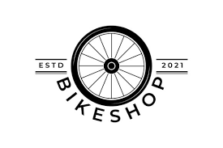

Inicio
Productos
Contacto
Registro
Modelo: Giant TCR advanced pro disc 1
Tallas disponibles: S, M, L
Cambio: Shimano Ultegra
Frenos: Shimano Ultegra hidraulic
Cassette: Shimano Ultegra 11x30
Platos/bielas: Shimano Ultegra, 36/52with Giant PowerPro power meter
PVP: 3999€
Escoja talla
S
M
L